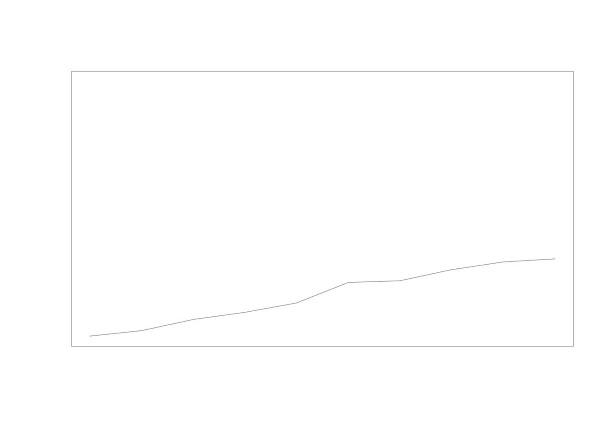
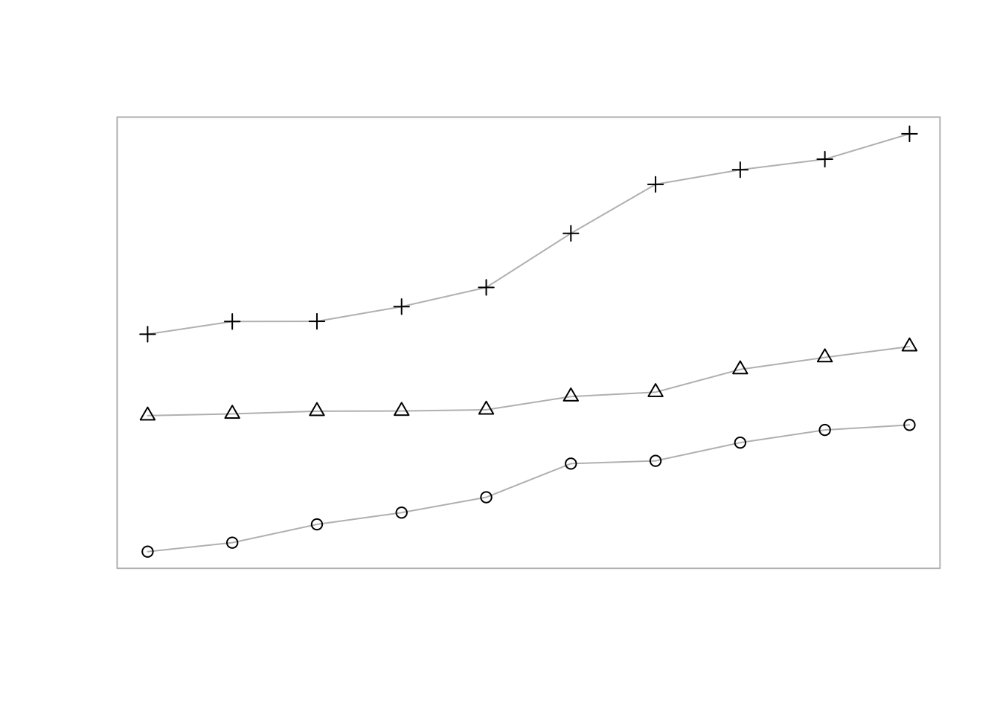
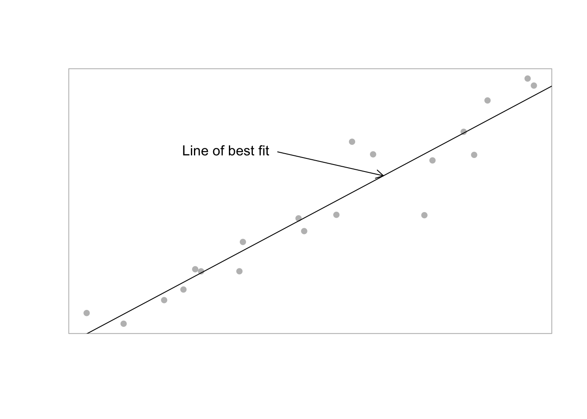
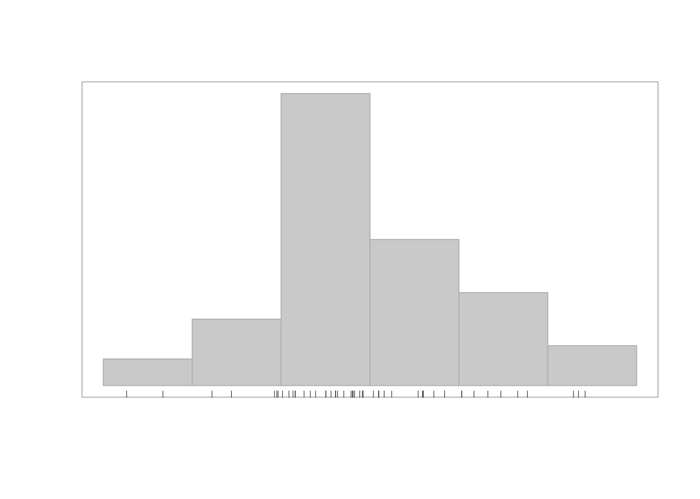
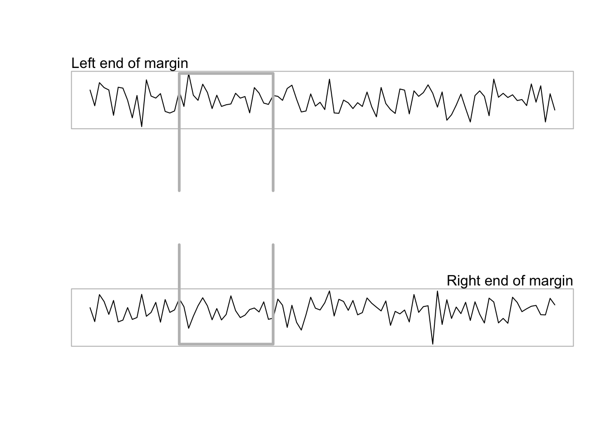
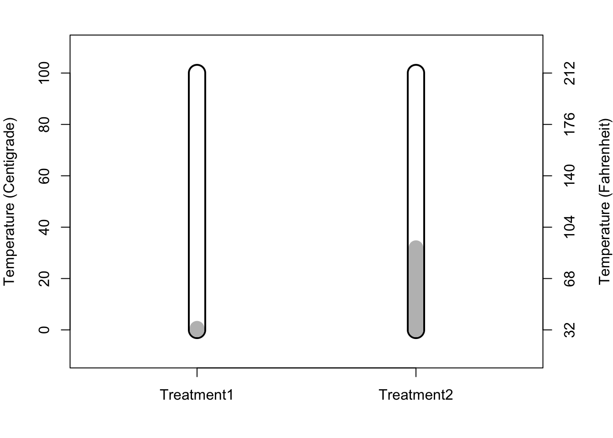

R基本绘图：创建与添加图形
王诗翔 · 2019-06-21
高级绘图函数 + 低级绘图函数才能让图形丰富多样起来。
基本的低级绘图函数
| 函数 | 描述 |
|---|---|
| points() | 数据符号 |
| lines() | 线条 |
| segments() | 线段 |
| arrows() | 箭头 |
| xspline() | 光滑曲线 |
| rect() | 矩形 |
| polygon() | 多边形 |
| polypath() | 多边形路径 |
| rasterImage() | 位图（在图形上可以添加外部图片） |
| text() | 文本 |
添加图形
还是要一顿操作猛如虎，才能学到本事。
x = 1:10
y = matrix(sort(rnorm(30)), ncol=3)
plot(x, y[, 1], ylim = range(y), ann=F, axes = F, type="l", col="gray")
box(col="gray")
开始加东西。
plot(x, y[, 1], ylim = range(y), ann=F, axes = F, type="l", col="gray")
box(col="gray")
points(x, y[,1])
lines(x, y[,2], col="gray")
points(x, y[,2], pch=2)
lines(x, y[,3], col="gray")
points(x, y[,3], pch=3)
在点旁边添加文本有时候很有用，使用 pos 可以设置数据符号与文本之间的偏移量。
y = x = 1:5
plot(x, y, ann=F, axes=F, col="gray", pch=16)
box(col="gray")
text(x[-3], y[-3], c("right", "top", "bottom", "left"),
pos=c(4, 3, 2, 1))
text(3, 3, "overlay")text() 还可以接受 R 表达式。
y = x = 1:5
plot(x, y, ann=F, axes=F, col="gray", pch=16)
box(col="gray")
text(x[-3], y[-3], c("right", "top", "bottom", "left"),
pos=c(4, 3, 2, 1))
text(3, 3, ~ x^2)
上述处理的都是向量数据，而matplot()、matpoints() 和 matlines()都是处理矩阵形式数据的。
绘图工具
grid() 可以添加网格线； abline() 添加直线； box() 在图形周围绘制矩形；rug() 可以沿着坐标轴绘制“地毯”图。
x = runif(20, 1, 10)
y = x + rnorm(20)
plot(x, y, ann=F, axes=F, col="gray", pch=16)
box(col="gray")
lmfit = lm(y ~ x)
abline(lmfit)
arrows(5, 8, 7, predict(lmfit, data.frame(x=7)),
length = 0.1)
text(5, 8, "Line of best fit", pos = 2)
y = rnorm(50)
hist(y, main="", xlab="", ylab="", axes=F, border="gray", col="light gray")
box(col="gray")
rug(y, ticksize = 0.02)
在边缘处添加图形
mtext() 函数可以在边缘区域的任何位置绘制文本，它的 outer 参数控制是在图像区域还是外部区域的边缘处输出。
side 控制在哪个边缘区域输出，1 - 底部，2 - 左侧，3 - 顶部，4 - 右侧。
我们也可以在图像区域或外部区域使用一般在绘图区域使用的函数，不过有点麻烦。我们需要先设定 xpd 的状态。
下面展示了一个例子：将绘制出的一个在两个图像之间穿越的矩形。
y1 = rnorm(100)
y2 = rnorm(100)
par(mfrow=c(2,1), xpd =NA)
# 绘制第一个图形
plot(y1, type="l", axes=FALSE,
xlab="", ylab="", main="")
box(col="gray")
mtext("Left end of margin", adj=0, side=3)
lines(x=c(20,20,40,40), y=c(-7, max(y1), max(y1), -7), lwd=3, col="gray")
# 绘制第二个图形
plot(y2, type="l", axes=FALSE,
xlab="", ylab="", main="")
box(col="gray")
mtext("Right end of margin", adj=1, side=3)
lines(x=c(20, 20, 40, 40), y=c(7, min(y2), min(y2), 7),
lwd=3, col="gray")
图例
legend() 函数用于在图像中添加图例或关键字。
第一个例子展示在散点图中添加图例的方法，图例将不同的组名和对应的符号关联起来。前 2 个参数给定对于用户坐标系统，
图例左上角的为止。第 3 个参数提供图例需要的标签，此外，通过指定 pch 参数可以在标签旁边绘制符号。
with(iris,
plot(Sepal.Length, Sepal.Width, pch=as.numeric(Species), cex=1.2))
legend(6.1, 4.4, c("setosa", "versicolor", "virginica"),
cex=1.5, pch=1:3)下一个例子展示条形图添加图例，图例中组名对应不同的填充模式。
barplot(VADeaths[1:2, ], angle = c(45, 135), density = 20,
col="gray", names = c("RM", "RF", "UM", "UF"))
legend(0.4, 38, c("55-59", "50-54"), cex=1.5, angle = c(135, 45), density = 20, fill = "gray")注意，怎么将图例符号对应于图形完全是由用户控制的。所以在绘制时一定要额外注意，相比于传统图形绘制， ggplot2 和 lattice 包会自动映射，更为方便。
坐标轴
有时候我们想要修改坐标轴，我们第一步需要禁止生成默认的坐标轴，这一点可以通过设置大多数高级函数的
axes 参数实现。 通过 par() 指定 xaxt = "n" 和 yaxt = "n" 也可以实现该目的。
下面举一个定制坐标轴的例子：
开始绘制一个初始图形，并且绘制 y 轴的尺度是摄氏度。接下来再绘制一个华氏温度的 y 轴。x 轴使用特殊标签，而不是默认刻度线的数值位置。
# 先生成数据并绘制没有数据符号和坐标轴的空图
x = 1:2
y = runif(2, 0, 100)
par(mar=c(4, 4, 2, 4))
plot(x, y, type = "n", xlim = c(0.5, 2.5), ylim = c(-10, 110),
axes=FALSE, ann=FALSE)
# 指定主 y 轴摄氏度刻度位置。
axis(2, at=seq(0, 100, 20)) # 2 表示绘制在左边，at指定刻度线位置
mtext("Temperature (Centigrade)", side = 2, line = 3)
# 绘制有特殊标签的底部坐标轴，以及表示华氏温度的 y 轴
axis(1, at=1:2, labels = c("Treatment1", "Treatment2"))
axis(4, at=seq(0, 100, 20), labels = seq(0, 100, 20)*9/5 + 32)
mtext("Temperature (Fahrenheit)", side=4, line=3)
box()
# 最后画一些温度样式的符号表示实际温度
segments(x, 0, x, 100, lwd=20)
segments(x, 0, x, 100, lwd=16, col="white")
segments(x, 0, x, y, lwd = 16, col = "gray")
坐标系统
在绘图区域内的图形输出是根据坐标轴的尺度自动定位的，而图形边缘处的文本则是根据距离绘图区域边界多少 文本行定位的。
par() 函数
一般情况下我们使用 par() 函数获取或设定图形的状态。其中 din、fin和pin 3个状态反映了当前绘图设备、图像区域以及回去区域的尺寸（宽度和高度），以英寸为单位。
par("din")
#> [1] 7 5
par("fin")
#> [1] 7 5
par("pin")
#> [1] 5.76 3.16usr 反映坐标轴范围。
par("usr")
#> [1] 0 1 0 1下面我们画一把与实际物理尺寸对应的尺子。
# 绘制一个空白图形并进行计算
plot(0:1, 0:1, type="n", axes=F, ann=F)
usr = par("usr")
pin = par("pin")
xcm = diff(usr[1:2])/(pin[1]*2.54)
ycm = diff(usr[3:4])/(pin[2]*2.54)
# 现在绘制的图形是根据厘米表示的
par(xpd=NA)
rect(0 + 0.2*xcm, 0-0.2*ycm,
1 + 0.2*xcm, 1-0.2*ycm,
col="gray", border = NA)
# 绘制边框、刻度和标签
rect(0, 0, 1, 1, col="white")
segments(seq(1, 8, 0.1)*xcm, 0,
seq(1, 8, 0.1)*xcm,
c(c(0.5, rep(0.25, 4),
0.35, rep(0.25, 4)),
7, 0.5)*ycm)
text(1:8*xcm, 0.6*ycm, 0:7, adj=c(0.5, 0))
text(8.2*xcm, 0.6*ycm, "cm", adj=c(0, 0))特殊情况
创建新图形
创建绘图函数
资料：《R绘图系统》（第二版）n